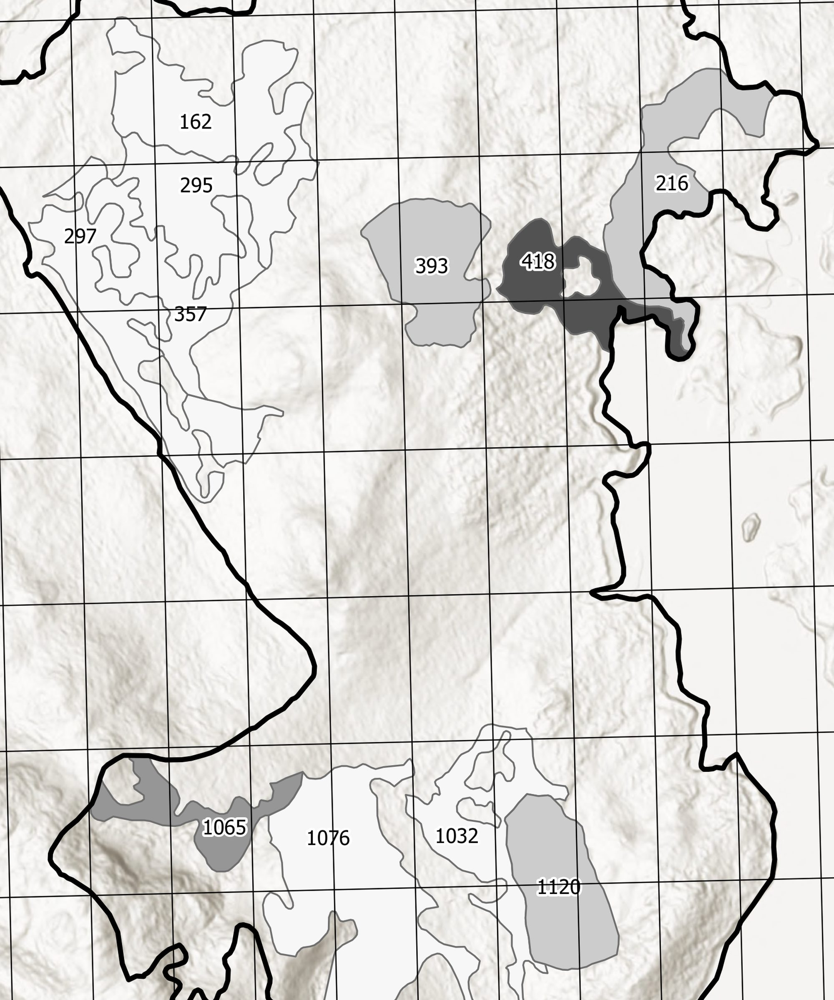

Tongass Timber Stand Valuation
TONGASS-2025-11 · Delivered

Overview
Cartographic deliverable inventorying timber stands offered for sale and classifying each by per-square-foot valuation tier. Output supports prospective bidder evaluation by visualizing stand boundaries, value class, and acreage in a single sheet.
Processing
SoftwareArcGIS Pro
Methods
- Timber stand polygons digitized from agency source data
- Per-square-foot value classified into 4 tiers (Jenks natural breaks)
- Per-stand acreage labeled directly on the map for transparency
Deliverables
- Valuation map (PDF)